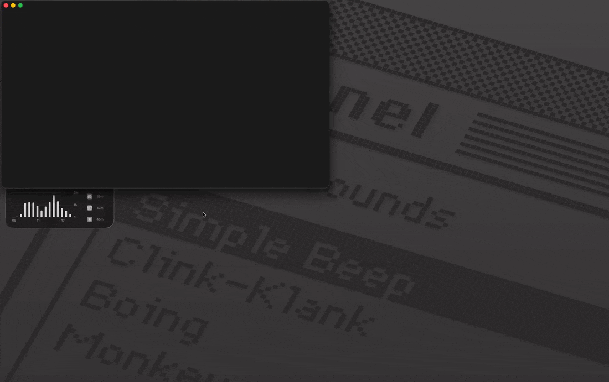

Your PRDs, skills & manifests on one side — the terminals your coding agents run in on the other. Supervise any agent from your phone. ~5 MB, opens in under half a second.
curl -fsSL https://raw.githubusercontent.com/z-alamsyah/playdown/main/install.sh | bash
macOS & Linux one-liner · or download for macOS / Linux / Windows

Split payment authorization from order placement so a failed charge never leaves a phantom order behind.
Annotate a PRD, send the review to the agent, watch it work — one light window.
| Playdown | Typical code editor | |
|---|---|---|
| App bundle | ~5 MB | 100+ MB |
| RAM (idle) | ~70–100 MB | 300–500+ MB |
| Startup | < 0.5 s | 1–3 s |
Split panes put the markdown that steers your agents — PRDs, skills,
manifests — next to real multi-session terminals where the agents run.
Edit on the left, live preview on the right, claude (or any CLI
agent) underneath. Files an agent edits auto-reload in place, and the
git gutter marks every changed line — click it to diff against HEAD.
Review a doc like a pull request — then hand the whole review to your agent.
Flip on Annotate ⌘⇧A, click any block in the preview, leave a comment. Each note is quoted, anchored to its source line, and saved per file.
One click pastes every file's notes as a single prompt into the active terminal session — safe paste, so multi-line prompts don't run themselves. Notes clear once sent. Prefer another destination? Copy as prompt.
The agent edits, files auto-reload, the git gutter shows the diff. Re-review, repeat — the loop never leaves the window.
The optional playdown-remote companion puts your terminal sessions on your phone — no relay, no cloud, no account.
Works with any coding agent — Playdown remotes the terminal, not the harness.
Flip on Remote access in Settings — Playdown runs the companion for you and shows the QR right there. Same Wi-Fi, or anywhere via Tailscale (direct WireGuard, no middleman).
Sessions grouped by agent status — needs you / working / done — tap one for a mobile terminal with a TUI-friendly key bar. Open and close tabs remotely.
Hook up your own Telegram bot: needs-you / done alerts carrying the agent's actual question, with inline Enter / Esc / 1 / 2 / 3 keys to answer from the notification.
Everything you need for a day in markdown — nothing you don't.
Drag a tab to any edge — nested, resizable, VSCode-style. Edit ⇄ preview per pane.
Quick open ⌘P, full-content search ⌘⇧F, command palette ⌘⇧P, go to line.
GFM, Mermaid diagrams, foldable YAML frontmatter with a metadata card in preview, outline panel.
Format ⇧⌥F, minify, sort keys, errors at the exact line. Images render inline.
Create, rename, trash, drag-to-move in the tree. playdown . opens any folder from your shell.
GitHub-style dark/light themes, fully rebindable shortcuts, session restored across restarts.
No subscription, no paid tier waiting to ambush you.
Download and go — there is nothing to sign into.
The app phones nothing home. Usage is gauged only from public download counts.
MIT-licensed on GitHub — read it, fork it, build on it.